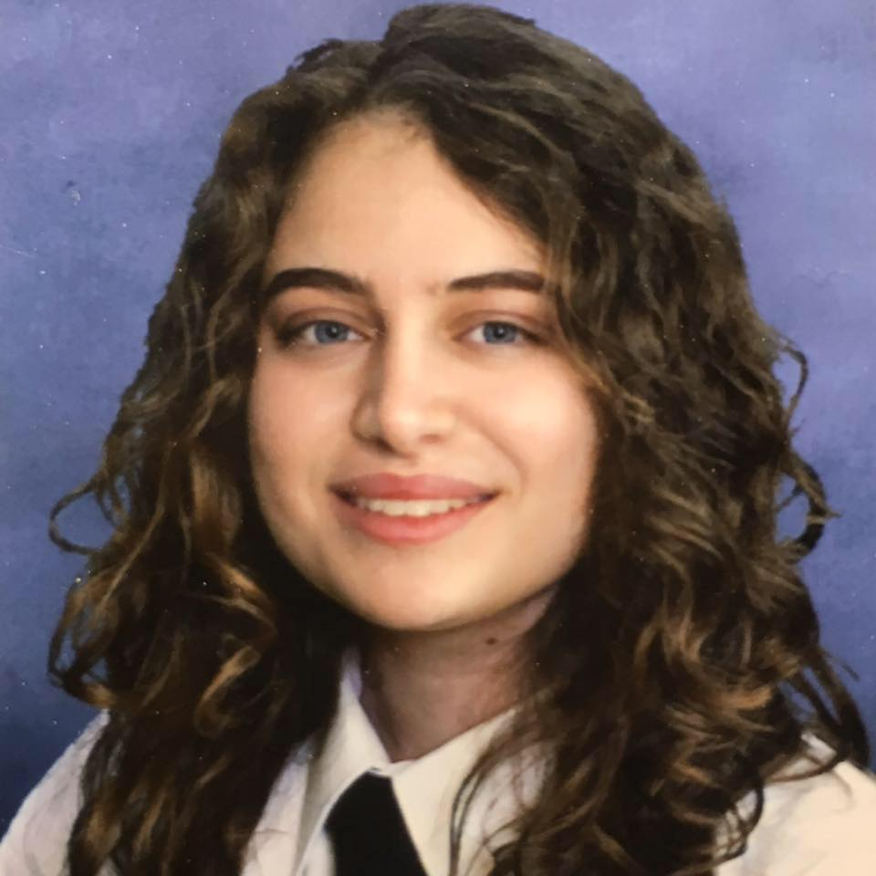

Georgiana Theophanous
Personal Details
Home Address: Vasili Michailidi 11, Strovolos, Nicosia, 2015, Cyprus
Click to Email me!
Mobile: +357 99728291

My LinkedIn!
About Me
My name is Georgiana Theophanous and I am 21 years old. I am from Nicosia, the capital of Cyprus, where I am currently living.
I recently graduated from Cardiff University in Wales, where I went to pursue a Physics degree. Even though I lived in Cardiff
for only 3 years I consider it my second home, since it's where I gained the opportunity to live away from home and become more
independant. Living in a different country and having only yourself to rely on played a major role in my character development
and it's an experience that I would recommend for everyone.
Education
Cardiff University (2019-2022)
- BSc(Hons): Physics
- Specialisms: Fields and Flows, Quantum Mechanics, Structured Programming,
Condensed Matter Physics, Optics, Cosmology/Astrophysics, Electromagnetic Radiation Detection,
Medical Ultrasound, Commercializing Innovation, Atomic and Nuclear Physics,
Particle Physics and Special Relativity
- Final Year Project Dissertation: ‘The Acoustics of Whale Song’, Mainly focusing
on the data analysis of whale sounds and investigating how the Intensity Levels of
Anthropogenic sounds affect whales
- Throughout this degree I gained and developed a number of skillsets, like experimental,
problem-solving, research and mathematical skills to name a few
Dasoupolis Lyceum, Nicosia, Cyprus (2016-2019)
- Apolytirion: 17.3/20 (86.5%)
- Majored in: Greek Language and Literature, Biology, Physics, Mathematics and English.
Relevant Skills
- Computer/IT: Data handling experience, data entry and analysis using Python during my first
and second year at university, as well as my final year project during my third year.
Adept use of Microsoft Office developed when I undertook ECDL.
- Communication: Proven Effective Verbal communication during my time as a Clerk relaying
information and documents between different departments. Further developed during my degree
in maintaining correspondence with peers, mentors, and assessors for the purpose of arranging
meetings and coordinating work.
- Teamwork: I worked effectively as part of a team to safeguard the personal data in
a professional and confidential manner. I have also collaborated with my peers as part of
my academic studies, together we performed extensive calculations and data analysis.
- Leadership: I was team leader as part of an academic assignment that involved discussing
and delegating responsibilities with my four-person team. It was also my responsibility
that everyone completed their designated tasks fully and within the time given.
Interests
- Musical Instruments: Guitar and Harmonica
- Books: I am appealed by books that are thought provoking,
an example being “The Plague” by Albert Camus.
- Taekwondo: 2 years, green-yellow belt